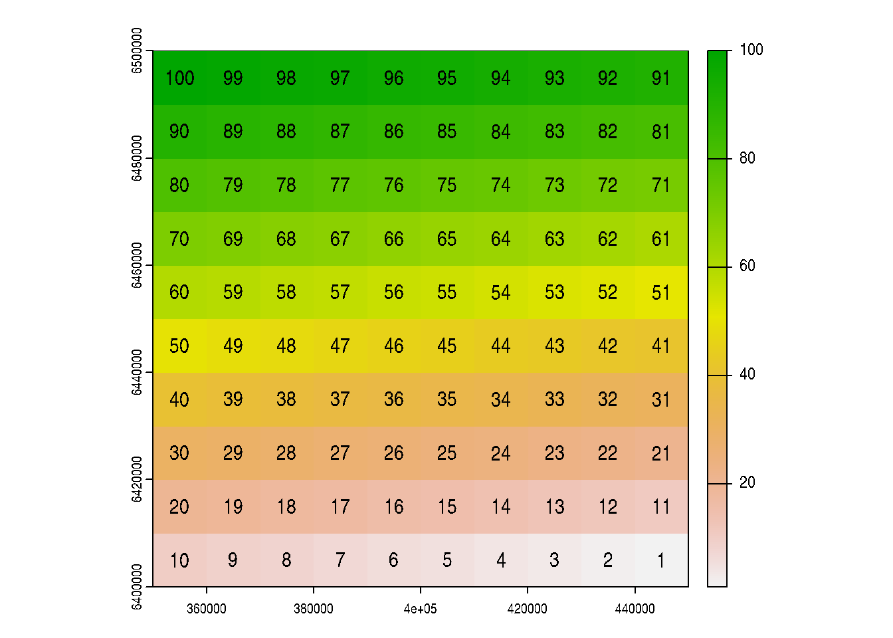
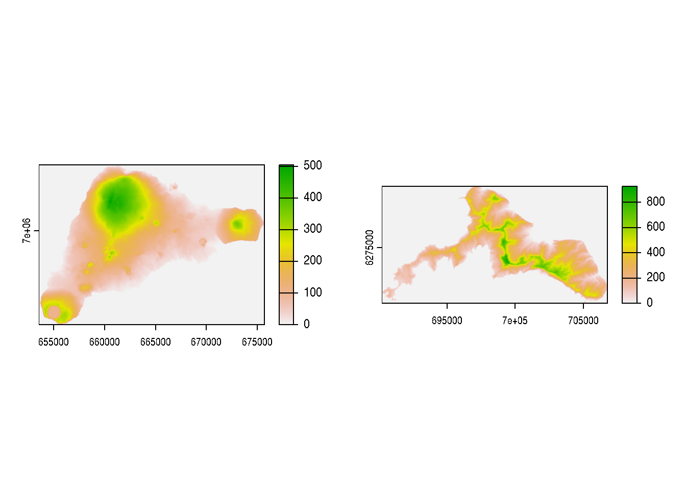
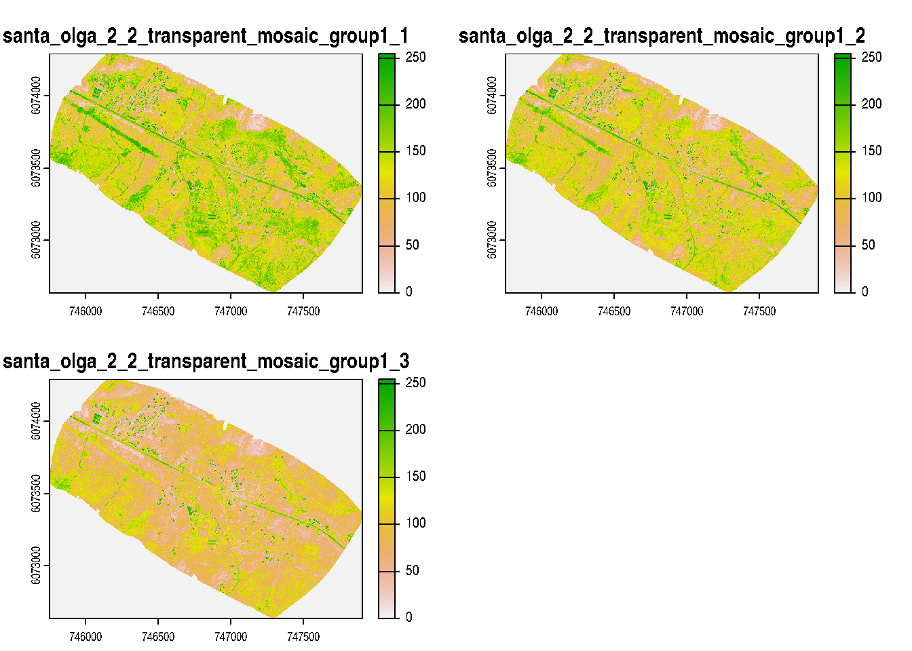
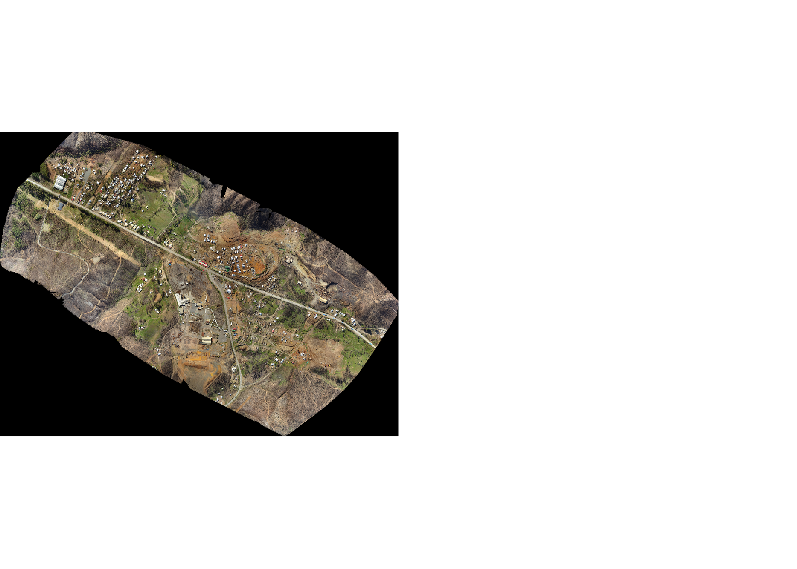

# instala {terra}
install.packages('terra')
# cargar {terra} en el entorno de R para poder utilizar
# las funciones adicionales para manejo de datos vectoriales que contiene
library(terra)Taller 5 (IMSE1017)
Datos raster con {terra}
Descripción
En la primera parte del curso se familiarizó con R (R Core Team 2023), las principales estructuras de datos, como realizar indexación, conoció algunas funciones y pudo realizar algunos gráficos básicos; utilizando R base. Ahora, en el curso hemos empezado a trabajar en R con datos geoespaciales de tipo vectoriales y raster. Para manejar datos vectoriales utilizamos {sf} (Pebesma 2018) y para datos de tipo raster {terra}(Hijmans 2023). En este taller trabajaremos con {terra}.
Objetivo del taller
Familiarizarce con {terra} para crear datos raster, asignarles SRC, transformar los SRC, leer y guardar archivos rasters desde/hacia el disco, y explorar su estructura.
Instalar y cargar {terra}
Hasta el momento en el curso hemos trabajado con los paquetes que vienen inculidos en R base (stats, graphics, grDevices, utils, datasets, methods y base). Ahora empezaremos a trabajar con paquetes adicionales que no vienen instalados por defecto en R, por lo que deberá instalarlos y cargarlos en R. En este taller trabajaremos con {terra} para poder manejar datos espaciales rasters.
Para instala y cargar {terra} debe realizar lo siguiente:
Data
Se proporcionan capas rastesr con los que deberá trabajar en el taller, estas corresponden a estaciones de calidad de aire y capas de biodiversidad, ubicados en Chile.
El archivo comprimido (.zip) que contiene los archivos los debe descargar desde acá.
¿Qué debe entregar?
Deberá utilizar RStudio para crear un script, en donde resolverá cada uno de los ejercicios. Debe utilizar los comentarios (#) para hacer una descripción del ejercicio e incorporar cualquier información que ayude a entender lo realizado. A modo de ejemplo:
# Ejercicio 1:
# comentario explicando lo que se hace
{
Aca va el script que resuelve el ejericio 1
}Debe guardar el script con el nombre taller4.R. Los archivos los debe subir en el campus virtual en la sección Actividades -> Evaluaciones -> Talleres -> Taller4
Fecha de entrega
Viernes 10 de noviembre hasta las 10:00am
Referencias
Hijmans, Robert J. 2023. terra: Spatial Data Analysis. https://CRAN.R-project.org/package=terra.
Pebesma, Edzer. 2018. «Simple Features for R: Standardized Support for Spatial Vector Data». The R Journal 10 (1): 439-46. https://doi.org/10.32614/RJ-2018-009.
R Core Team. 2023. R: A Language and Environment for Statistical Computing. Vienna, Austria: R Foundation for Statistical Computing. https://www.R-project.org/.
Ejercicios
1.- (30pts) Cree un objeto llamdo r de tipo spatRaster que tenga una extensión entre las latitudes 33°30’ y 32°30’ Sur; y entre las longituded 70°40’ y 69°40 Oeste. Indique:
- las unidades
- la resolución espacial
- cantidad de filas y columnas
- el sistema de referencia de coordenadas
library(terra)terra 1.7.39r <- rast(ymax=-69.66667,ymin=-70.66667, xmax = -32.50,xmin=-33.50)2.- (30pts) Cree un objeto llamdo r de tipo spatRaster que tenga una extensión entre las latitudes 33°30’ y 32°30’ Sur; y entre las longituded 70°40’ y 69°40 Oeste. El raster debe tener 10 filas y 5 columnas; y debe tener como valores en las celdas los números del 1 al 50.
r <- rast(xmax=-69.66667,xmin=-70.66667, ymax = -32.50,ymin=-33.50,ncol=5,nrow=10)3.- (30pts) Cree un raster que tenga una extensión entre 350.000m y 450.000m Este y 6.400.00m y 6.500.000m Norte (UTM EPSG:32719). Que tenga 10 filas y 10 columnas. Agregue los valores a cada celda del 100 al 1. Haga un plot del raster y muestre los valores en la celdas.
r <- rast(xmin =350000, xmax=450000,ymin=6400000,ymax=6500000,crs = "EPSG:32719",
ncol=10,nrow=10)
values(r) <- 100:1
plot(r)
text(r)
4.- (30pts) Cree un raster de tres capas, que tenga 3 filas y 3 columnas. Los pixeles de la primera capa debe tener los valores 1 a 9, de la segunda de 10 a 18 y la tercera de 19 a 27.
r <- rast(nrow=3,ncol=3,nlyr=3)
values(r) <- c(1:9,10:18,19:27)5.- (20pts) Haga la suma de las tres capas de él raster de la pregunta anterior. Guarde el resultado en un nuevo raster. Hagua un plot del raster y muestre los valores en cada celda.
r2 <- sum(r)6.- (30pts) Para el raster de la pregunta anterior aplique a cada celda la raiz cuadrada (sqrt) y guarde el raster en un objeto nuevo. Guarde el objeto raster en disco con el nombre r_sqrt.tif.
dir_temp <- tempdir() #carpeta temporal
r2_sqrt <- sqrt(r2) #aplica raiz cuadrada a r2
writeRaster(r2_sqrt,file.path(dir_temp,'r_sqrt.tif'))7.- (75) De los archivos raster que descargó en la sección data. Indique para cada uno de los archivos raster lo siguiente:
- Sistema de Referencia de Coordenadas
- Número de filas y columnas
- Resolución espacial
- Número de capas (layers)
- Haga un plot de cada raster. En el caso del raster de Santa Olga, utilice la función
plotyplotRGB.
#carpeta dónde se encuentran los archivos
dir <- '/home/francisco/Descargas/capas_rasters/'
files_islas <- list.files(file.path(dir,'dem_islas'),
full.names = TRUE)
file_sta_olga <- list.files(dir,
full.names = TRUE)
# DEM Isla de Pascua
dem_ip <- rast(files_islas[1])
# DEM Juan Fernández
dem_jf <- rast(files_islas[2])
# Raster Santa Olga
sta_olga <- rast(file_sta_olga[2])
#sistema de referencia de coordenadas
crs(dem_ip,describe = TRUE) name authority code area extent
1 WGS 84 / UTM zone 12S EPSG 32712 <NA> NA, NA, NA, NAcrs(dem_jf,describe = TRUE) name authority code area extent
1 WGS 84 / UTM zone 17S EPSG 32717 <NA> NA, NA, NA, NAcrs(sta_olga,describe = TRUE) name authority code
1 WGS 84 / UTM zone 18S EPSG 32718
area
1 Between 78°W and 72°W, southern hemisphere between 80°S and equator, onshore and offshore. Argentina. Brazil. Chile. Colombia. Ecuador. Peru
extent
1 -78, -72, 0, -80#número de filas y columnas
dim(dem_ip)[1] 3938 5542 1dim(dem_jf)[1] 4298 8263 1dim(sta_olga)[1] 3812 4989 3#Resolución espacial
res(dem_ip)[1] 4 4res(dem_jf)[1] 2 2res(sta_olga)[1] 0.4328 0.4328#número de capas
nlyr(dem_ip)[1] 1nlyr(dem_jf)[1] 1nlyr(sta_olga)[1] 3#plot
par(mfrow = c(1,2))
plot(dem_ip)
plot(dem_jf)
plot(sta_olga)
plotRGB(sta_olga)